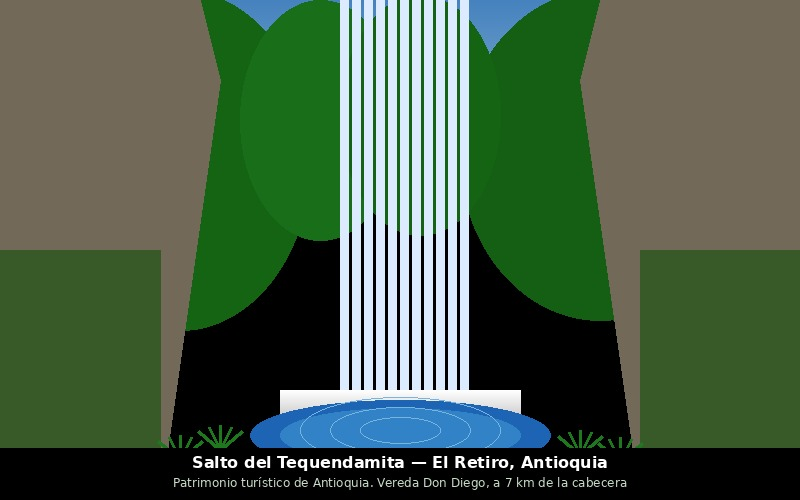
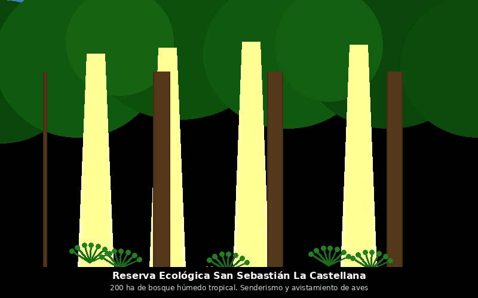
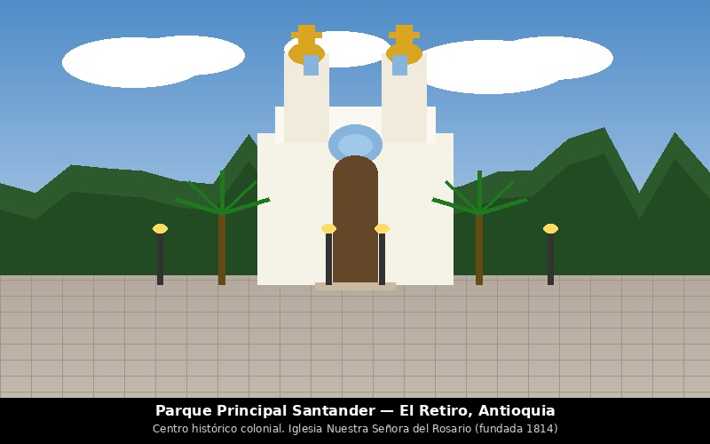

Salto del Tequendamita — Patrimonio turístico de Antioquia
A 7 km de la cabecera municipal, vereda Don Diego, vía La Ceja

Reserva Ecológica San Sebastián La Castellana
200 ha de bosque húmedo tropical entre El Retiro y Envigado

Parque principal Santander — Patrimonio de Antioquia
Centro histórico colonial. Iglesia Nuestra Señora del Rosario (fundada 1814)
Centro Cultural Javiera Londoño
Estatua de bronce cortando cadenas. Primera liberación de esclavos en América
Atractivos turísticos
Salto del Tequendamita
Cascada patrimonio turístico de Antioquia a 7 km por la vía a La Ceja.
Represa de La Fe — Parque Los Salados
Canopy, paintball, senderismo y paseos en bote. Mall La Fe con gastronomía de autor.
Parque principal Santander y cabecera
Patrimonio arquitectónico. Iglesia Nuestra Señora del Rosario, tiendas artesanales.
Centro Cultural Javiera Londoño
Estatua en bronce (Giuseppe Agelao). Primera liberación de esclavos en América (1766).
Reserva Ecológica San Sebastián La Castellana
200 ha de bosque húmedo tropical. Senderismo y avistamiento de aves.
Corredor mueblero (+115 talleres)
Visitar los talleres artesanales y conocer la tradición centenaria guarceña.
Ruta de los murales
Arte urbano en las calles de la cabecera que cuenta la historia del municipio.
Caminos veredales y cascadas
Cascadas en Nazareth, La Honda, El Carmen y Normandía. Senderos precolombinos.
Internacional: El Lycée Français de Medellín tiene su campus en la vereda Carrizales (km 10).